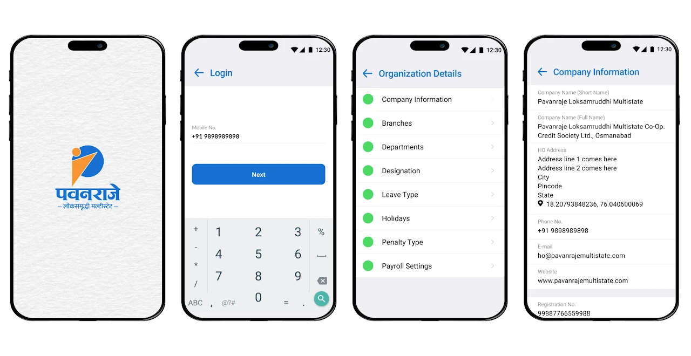
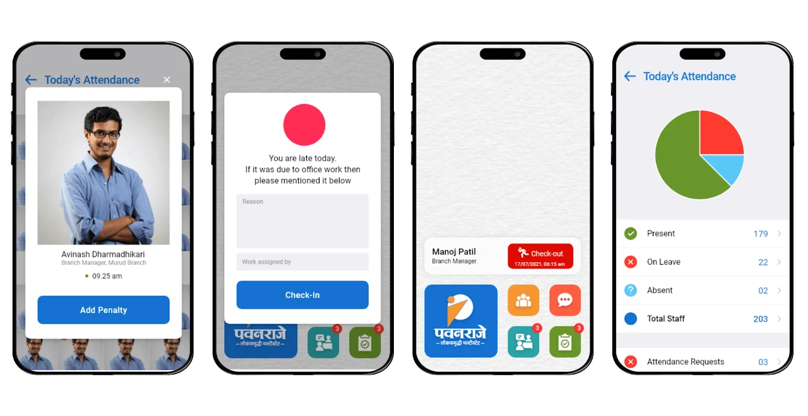
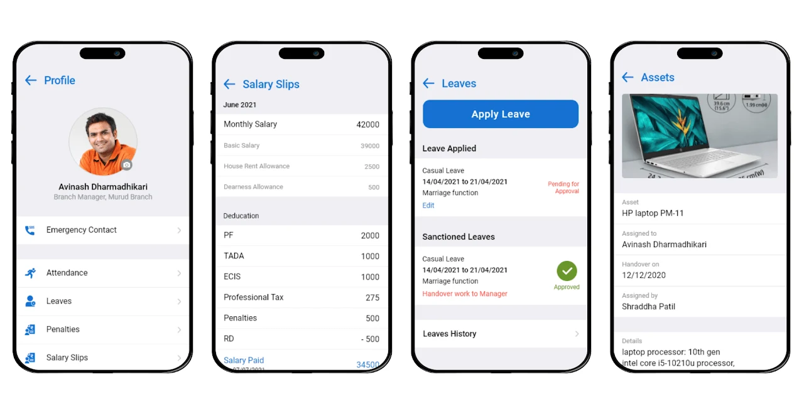
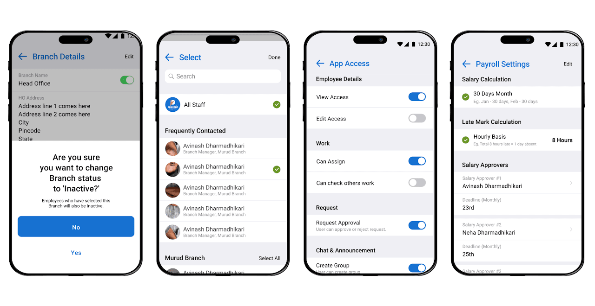
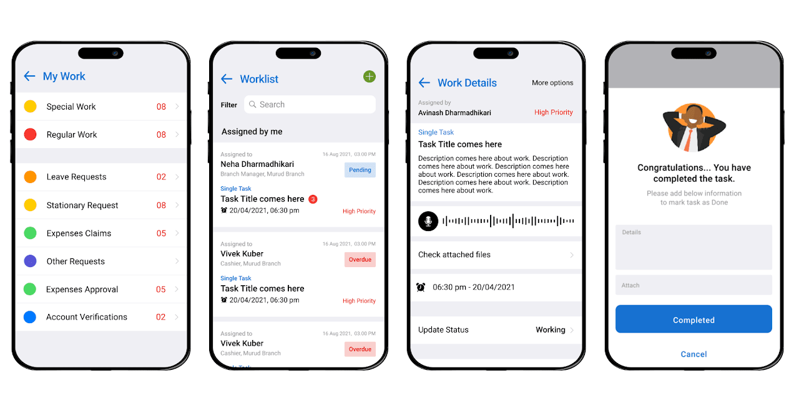

Project
This project focused on simplifying daily operations for institutions that were still working manually.
The challenge was not building features, but making the system usable for people with low technical familiarity.
Understanding
Processes like attendance, expenses, and tracking were done manually.
Existing tools were available, but users found them too complex to use regularly.
Approach
The focus was to simplify workflows instead of adding more features.
Everything needed to be easy to understand and usable on mobile.
Execution
Key flows like attendance, task tracking, and expenses were redesigned with minimal steps.
The system was built to match how users already work, not force them to change behavior.
My Role
I worked on understanding user challenges, designing the experience, and ensuring smooth execution.
This included research, UX, coordination with teams, and testing.
Outcome
• Reduced manual effort in daily operations
• Improved adoption due to simpler flows
• Faster execution of daily tasks
• Scalable system for multiple institutions
Product Experience




